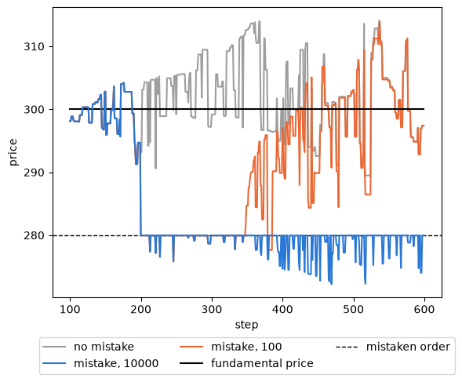
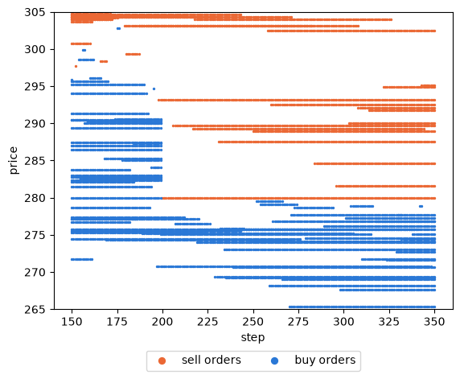

A fat-finger order¶
A fat-finger error is an order typed by mistake, with a wrong price or a much larger volume than intended.
This tutorial places one very large sell order below the market price in the simulation of
Running a simulation, records the order book around it, and asks how long the market takes to recover and how
the answer depends on the size of the mistake.
It follows the fat-finger tutorial of Plham (FatFingerMain
and its use cases).
The complete script is tutorial_fat_finger.py.
It needs matplotlib for the plots, which is not installed with PAMS
(pip install matplotlib).
The model¶
The market and the 100 FCNAgent agents are those of Running a simulation. Each agent
expects a price from a fundamental term and a noise term (the FCN model of Chiarella and Iori, 2002, with the chart
weight set to 0), and in each step one of them places a limit order of one share around its expected price. The
fundamental price stays at 300.
The mistake is the built-in OrderMistakeShock event. At its trigger step, it takes the first
order that reaches the target market and replaces it with a limit order of orderVolume shares at
\(P (1 + r)\), where \(P\) is the current market price and \(r\) is priceChangeRate. A negative
\(r\) gives a sell order, a positive one a buy order. The agent that sent the original order owns the mistaken
one, and the order stays in the book for orderTimeLength steps unless it is executed.
The configuration¶
The configuration is that of samples/fat_finger without its comments. The second session
("sessionName": 1) lists the event, and the event block sets a sell order of 10000 shares at 5% below the
market price, with a lifetime of 10000 steps:
CONFIG: Dict[str, Any] = {
"simulation": {
"markets": ["Market"],
"agents": ["FCNAgents"],
"sessions": [
{
"sessionName": 0,
"iterationSteps": 100,
"withOrderPlacement": True,
"withOrderExecution": False,
"withPrint": True,
},
{
"sessionName": 1,
"iterationSteps": 500,
"withOrderPlacement": True,
"withOrderExecution": True,
"withPrint": True,
"events": ["OrderMistakeShock"],
},
],
},
"OrderMistakeShock": {
"class": "OrderMistakeShock",
"target": "Market",
"triggerTime": 100,
"priceChangeRate": -0.05,
"orderVolume": 10000,
"orderTimeLength": 10000,
"enabled": True,
},
"Market": {
"class": "Market",
"tickSize": 0.00001,
"marketPrice": 300.0,
"outstandingShares": 25000,
},
"FCNAgents": {
"class": "FCNAgent",
"numAgents": 100,
"markets": ["Market"],
"assetVolume": 50,
"cashAmount": 10000,
"fundamentalWeight": {"expon": [1.0]},
"chartWeight": {"expon": [0.0]},
"noiseWeight": {"expon": [1.0]},
"noiseScale": 0.001,
"timeWindowSize": [100, 200],
"orderMargin": [0.0, 0.1],
},
}
triggerTime is counted from the start of the session, which is step 100, so the mistake happens at step 200.
All the keys are described in Events. Apart from the event, this is the configuration of
Running a simulation with other session names and an outstandingShares key, which do not change the run.
The script also runs it without the mistake by setting enabled to False: the event then registers no hooks
and is not added to the simulator, and the market prices are exactly those of Running a simulation with the
same seed.
Recording the order book¶
The default logger does not keep the order book, so the script uses its own logger (see Writing a logger). It keeps every order and every execution, and the volume at each price of both sides of the book at the end of each step:
class BookRecorder(Logger):
"""Keep every order and execution, and the order book at the end of every step."""
def __init__(self) -> None:
"""Initialize the recorder."""
super().__init__()
self.orders: List[OrderLog] = []
self.executions: List[ExecutionLog] = []
self.buy_books: Dict[int, Dict[Optional[float], int]] = {}
self.sell_books: Dict[int, Dict[Optional[float], int]] = {}
def process_order_log(self, log: OrderLog) -> None:
"""Keep an order accepted by the market.
Args:
log (OrderLog): the order, after the market has rounded its price.
"""
self.orders.append(log)
def process_execution_log(self, log: ExecutionLog) -> None:
"""Keep an execution.
Args:
log (ExecutionLog): the execution.
"""
self.executions.append(log)
def process_market_step_end_log(self, log: MarketStepEndLog) -> None:
"""Keep the volume at each price of the order book at the end of the step.
Args:
log (MarketStepEndLog): the log of the market at the end of the step.
"""
time: int = log.market.get_time()
self.buy_books[time] = log.market.get_buy_order_book()
self.sell_books[time] = log.market.get_sell_order_book()
The market rounds the price of an order to its tick size before it logs the order, so the prices in the order logs
are those of the book. The books are dicts from a price to the volume of the orders at that price; the key
None would collect market orders, which the FCN agents do not place.
Two small functions find the mistaken order and count the part of it that is still in the book:
def find_mistake(runner: SequentialRunner, recorder: BookRecorder) -> OrderLog:
"""Find the mistaken order among the orders of the run.
Args:
runner (SequentialRunner): the runner after the run.
recorder (BookRecorder): the recorder of the run.
Returns:
OrderLog: the order placed at the trigger step. Only one order is placed per
step, so this is the order that the event replaced.
"""
event = cast(OrderMistakeShock, runner.simulator.name2event["OrderMistakeShock"])
return next(order for order in recorder.orders if order.time == event.trigger_time)
def wall_left(recorder: BookRecorder, mistake: OrderLog, time: int) -> int:
"""Count the shares of the mistaken order not executed at the end of a step.
Args:
recorder (BookRecorder): the recorder of the run.
mistake (OrderLog): the mistaken order.
time (int): the step.
Returns:
int: the volume of the mistaken order minus its executions up to ``time``.
"""
executed: int = sum(
execution.volume
for execution in recorder.executions
if execution.sell_order_id == mistake.order_id and execution.time <= time
)
return mistake.volume - executed
Only one order is placed per step (maxNormalOrders is 1), so the order logged at the trigger step is the
mistaken one. Running the script with seed 42 first prints the mistaken order, then the market price, the best
prices, the volume on each side of the book and what is left of the mistaken order at the end of a few steps:
mistaken order: FCNAgents-28 sells 10000 at 279.95251 in step 200
step price best buy best sell buy volume sell volume wall left
199 294.687 290.590 293.116 28 39 -
200 279.963 277.361 279.953 10 10021 9982
201 279.953 277.361 279.953 10 10020 9981
250 279.953 275.791 279.953 16 9984 9953
400 274.649 274.508 279.953 27 9892 9874
599 279.953 274.561 279.953 26 9803 9793
The market price at step 199 is 294.687, so the mistaken order sells at \(294.687 \times 0.95 = 279.953\). At step 200 it meets every buy order at or above that price: 18 shares are executed, and the buy side of the book falls from 28 to 10 shares. The best buy price drops from 290.590 to 277.361. All 18 shares trade at one price, 279.963: PAMS executes all the volume matched in one step at a single price, set by the last pair of orders matched, which here is the lowest of these buy orders.
The other 9982 shares stay in the book as a wall. From then on, any buy order at or above 279.953 is executed against the wall at the wall’s price, 279.953, so the market price can no longer rise above it; it only falls below it when a sell order meets a lower buy order, as at step 400. By step 599, the buyers have taken 207 of the 10000 shares.
The price after the mistake¶
The script also runs the same seed without the mistake, and with a mistaken order of only 100 shares, and compares the market prices of steps 201 to 599 and the volume traded in them:
steps 201-599 min max last volume
no mistake 289.481 314.085 297.401 149
mistake, 10000 272.227 279.953 279.953 245
mistake, 100 275.821 313.867 297.396 192

With 10000 shares, the price never exceeds the price of the mistaken order from step 201 on, and ends the run 7% below the fundamental price. The FCN agents expect the price to return to 300 and send many buy orders, which is why more shares are traded than without the mistake, but one share at a time they cannot absorb the wall: at about one share every two steps, the 9793 shares left would last about 19000 more steps, longer than the order’s lifetime. With 100 shares, the wall is used up at step 347 and the price returns to the level of the run without the mistake.
How large must the mistake be?¶
One run is one path. The script repeats the runs with seeds 42 to 51, with mistaken orders of 10000, 100 and 10 shares and without the mistake, and records the step at which the mistaken order is used up and the mean market price of steps 500 to 599:
def compare_volumes(
volumes: Sequence[Optional[int]] = (10000, 100, 10, None),
seeds: Sequence[int] = SEEDS,
) -> Dict[str, List[Tuple[Optional[int], float]]]:
"""Run the simulation with mistaken orders of several volumes, and without one.
Args:
volumes (Sequence[int, Optional]): the volumes of the mistaken order. None
runs the simulation without the mistaken order.
seeds (Sequence[int]): the seeds of the runs.
Returns:
Dict[str, List[Tuple[int, Optional], float]]: for each volume, and for each
seed, the step at which the mistaken order is fully executed (None if it is
not) and the mean market price of steps 500 to 599.
"""
results: Dict[str, List[Tuple[Optional[int], float]]] = {}
for volume in volumes:
rows: List[Tuple[Optional[int], float]] = []
for seed in seeds:
runner, recorder = run_simulation(
seed, enabled=volume is not None, volume=volume
)
used_up: Optional[int] = None
if volume is not None:
mistake: OrderLog = find_mistake(runner, recorder)
used_up = next(
(
time
for time in range(mistake.time, 600)
if wall_left(recorder, mistake, time) == 0
),
None,
)
market = runner.simulator.name2market["Market"]
mean_price: float = statistics.mean(
market.get_market_prices(times=range(500, 600))
)
rows.append((used_up, mean_price))
results["none" if volume is None else str(volume)] = rows
return results
volume used up mean step mean price 500-599
10000 0/10 - 281.81
100 10/10 437.7 294.94
10 10/10 205.9 298.55
none - - 298.43
The 10000-share order is never used up, and the mean price of steps 500 to 599 is about 6% below the fundamental price. An order of 100 shares is used up in every run, on average about 240 steps after the mistake, and the mean price of steps 500 to 599 is only 3.5 lower than without the mistake. An order of 10 shares is used up about 6 steps after the mistake on average, and leaves no trace in the late prices. The size of the mistake, compared with the flow of buy orders that can absorb it, decides whether the market recovers within the run.
The order book¶
The recorded books show the wall directly. Each dot is a price with at least one order at the end of a step:

Before step 200, buy orders sit up to about 303. At step 200, those above 279.953 disappear, and the mistaken order forms a line of sell orders at 279.953 that stays for the rest of the run. The sell orders placed above it are never reached, and new buy orders pile up below it.
Differences from Plham¶
In Plham, the configuration names an agent group (
"agent"), and the first agent of that group places the mistaken order in addition to the orders of the step. In PAMS, theagentkey is ignored with a warning, and the event replaces the first order that reaches the market at the trigger step, so the owner is whichever agent placed that order (hereFCNAgents-28).In the run shown by Plham, the market price falls to about 285 at the mistake. Here it falls to 279.953, 5% below the market price of step 199, which was already below the fundamental price.
PAMS does not check that an agent owns the shares it sells:
FCNAgents-28started with 50 shares and ends the run holding -155.Plham writes the whole order book in its output (
OrderBook#dump) and plots it with an R script. Here, a logger keeps the volume at each price of the book, and matplotlib draws it.
References¶
Chiarella, C. and Iori, G. (2002). A simulation analysis of the microstructure of double auction markets. Quantitative Finance, 2(5), 346–353. https://doi.org/10.1088/1469-7688/2/5/303
Plham: FatFingerMain and FatFingerMain_UseCases. Plham cites no paper for this case.